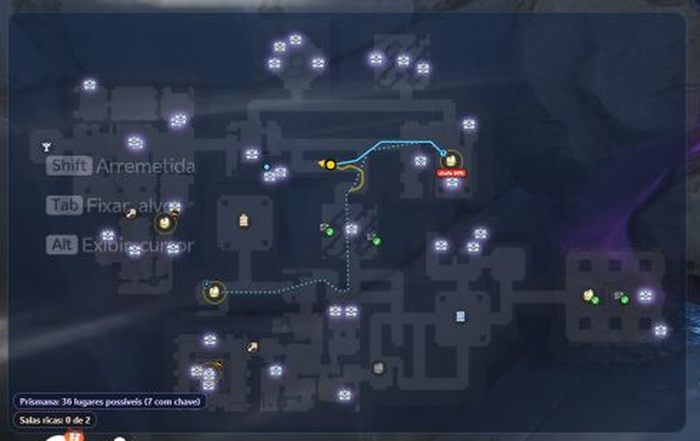

Sua primeira partida
Do jogo aberto ao mapa na tela.
Antes de jogar
O que conferir antes de abrir o jogo
- Aniimo em janela ou tela cheia sem bordasA tela cheia exclusiva não pode ser capturada, e o mapa não funciona nela.
- AniiCompanion abertoPode abrir antes do jogo. A janela do app mostra “Esperando o Aniimo abrir…”.
- Idioma, só na primeira vezA janela do app abre perguntando “Em qual idioma você quer o app?”. Toque em “Português” ou “English”. Para trocar depois, use o botão do globo, no alto da janela.
- Internet, só na primeira vezO app baixa os mapas dos santuários (“Preparando os mapas…”) em alguns segundos.
Na partida
Como o mapa aparece
O mapa só aparece dentro do santuário do Roubo dos Ovos.
- Abra o AniimoA janela do app muda para “Descobrindo em qual santuário você está…”.
- Comece o Roubo dos OvosEscolha o modo no jogo e inicie a partida.
- Entre no santuário e ande um poucoÉ assim que o app descobre qual dos santuários é o seu. Fora dele, o mapa fica escondido.
- Espere o mapaA janela do app diz “Tudo certo! Santuário 20034 · Pesadelo” (o número e a dificuldade mudam) e o mapa surge por cima do jogo.
- JogueAbriu a bolsa, um baú ou um menu? O mapa some e volta sozinho. É de propósito.
 1234
1234- Minimapa do jogo. O app acha a sua posição nele.
- Mapa do AniiCompanion. O santuário inteiro, aqui em janela pequena.
- Você. A seta amarela.
- Contadores. Prismana e salas ricas.
Janela de controle
A janela do app
As abas Mapa, Ajudas e Amigos ficam no alto dela, e o botão do globo troca o idioma do app. Os números abaixo são os da captura.

- Reiniciar mapa. A seta circular no alto. Use se o mapa aparecer cortado ou parado. Ninhos, ovos e baús continuam marcados.
- Estado. Diz se está tudo certo, com o santuário e a dificuldade (“Tudo certo! Santuário 20034 · Pesadelo”), e lembra que o F1 mostra ou esconde o mapa.
- Tela toda | Janela. Escolhe entre o mapa cobrindo o jogo e um mapa pequeno num canto.
- Como o mapa se mexe. “Gira com você” ou “Mapa parado”. Veja a diferença →
- Dificuldade. A janela não tem mais botões para ela: o app descobre sozinho.
- Salvar relatório. Gera um .zip na pasta Downloads. Mande para quem te passou o app.
A dificuldade
O app lê a meta de moedas do painel do jogo e acerta a dificuldade sozinho. Se não conseguir, o próprio santuário indica. Você a vê no cartão de estado e numa etiqueta no mapa.
Atalhos
| F1 | Mostra ou esconde o mapa. |
|---|---|
| Ctrl + F1 | Só na janela pequena: destrava para arrastar pela barra e redimensionar pelo canto. De novo, trava e o clique passa para o jogo. Ela lembra onde você a deixou. |
| Ctrl + Shift + F1 | Reinicia o mapa. Igual ao botão “Reiniciar mapa”. |
Com o AniiCompanion aberto, F1, Ctrl+F1 e Ctrl+Shift+F1 não chegam ao jogo. Se outro programa usa o F1, como o aniimo-dungeon-map, feche-o antes.
Dois tamanhos
Tela toda ou janela pequena?
Você escolhe no marcador 3 da janela do app.

Tela toda
O mapa fica por cima do jogo, centrado em você, com a opacidade que você escolher.

Janela pequena
O santuário inteiro num canto. Mova e redimensione com Ctrl+F1.
Ajustar janela e opacidade